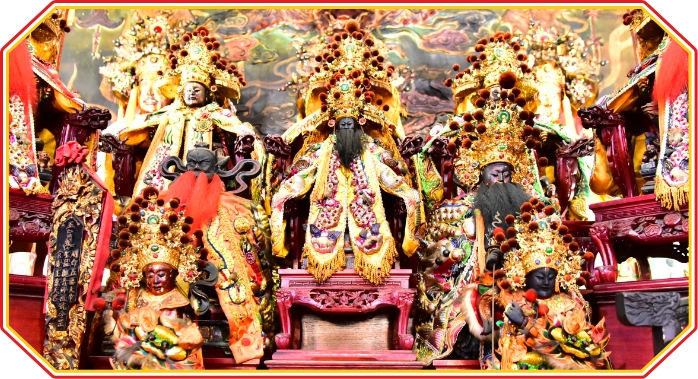
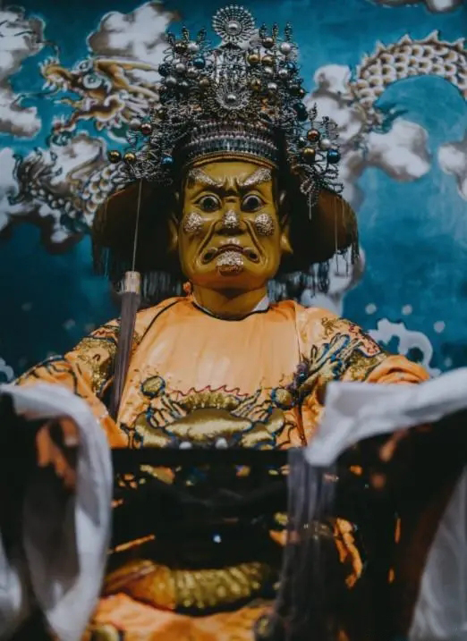

壹
五福大帝
The Five Blessings Emperors
福州游神信仰的核心支柱

起源传说与神格演变
五福大帝（五灵公）信仰是福州首屈一指的民间信仰，也是整个游神体系的神学根基。祖庙为福州台江区白龙庵。
"吾等当舍身救人。"——五人遂共饮毒水而亡，以死警示全城。
五福大帝的神格经历了关键转变：从东晋道藏中的"五方瘟鬼主"，到福州民间将瘟神附会为舍身救民的义士——从"降瘟者"变为"驱瘟者"。
五福大帝 · 五灵公

显灵公 · 春瘟
张元伯
金面红须三眼，着黄袍
五兄弟之首，地位最尊
五兄弟之首，地位最尊

应灵公 · 冬瘟
钟士秀
绿脸无须鸟嘴，着绿袍
中毒甚重，面变尖嘴
中毒甚重，面变尖嘴

宣灵公 · 夏瘟
刘元达
红面无须笑脸，着红袍
最先听到瘟神密谋
最先听到瘟神密谋

扬灵公 · 中瘟
史文业
粉面长须温文尔雅，着黑袍
五瘟总管，地位最高
五瘟总管，地位最高

振灵公 · 秋瘟
赵公明
黑面长须威武勇猛，着白袍
赵世子之父
赵世子之父
五帝五色体系对照
| 神明 | 道教五方 | 福州本地面色 | 台南白龙庵色 | 主管 |
|---|---|---|---|---|
| 张元伯 | 南方 · 火 | 金面红须 | 黑 | 春瘟 |
| 钟士秀 | 北方 · 水 | 绿脸鸟嘴 | 白 | 冬瘟 |
| 刘元达 | 东方 · 木 | 红面笑脸 | 绿 | 夏瘟 |
| 史文业 | 中央 · 土 | 粉面长须 | 黄 | 中瘟 |
| 赵公明 | 西方 · 金 | 黑面长须 | 红 | 秋瘟 |